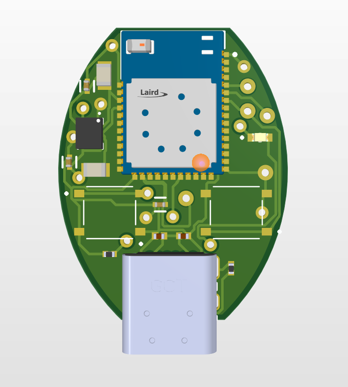
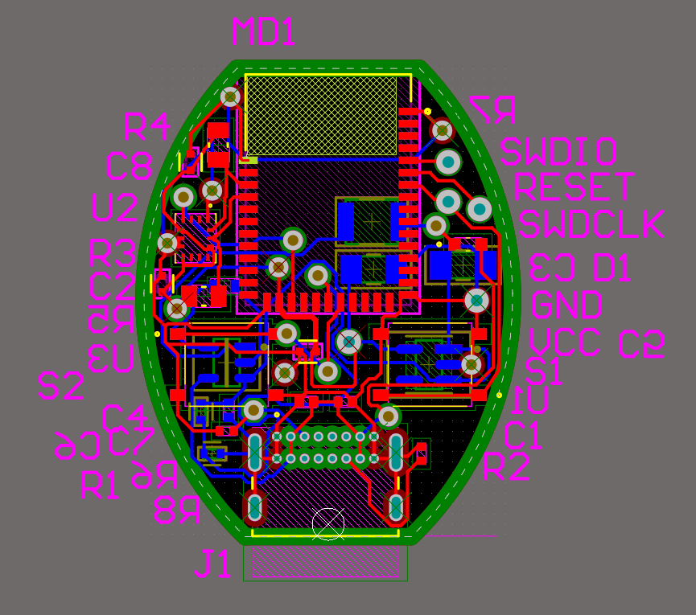
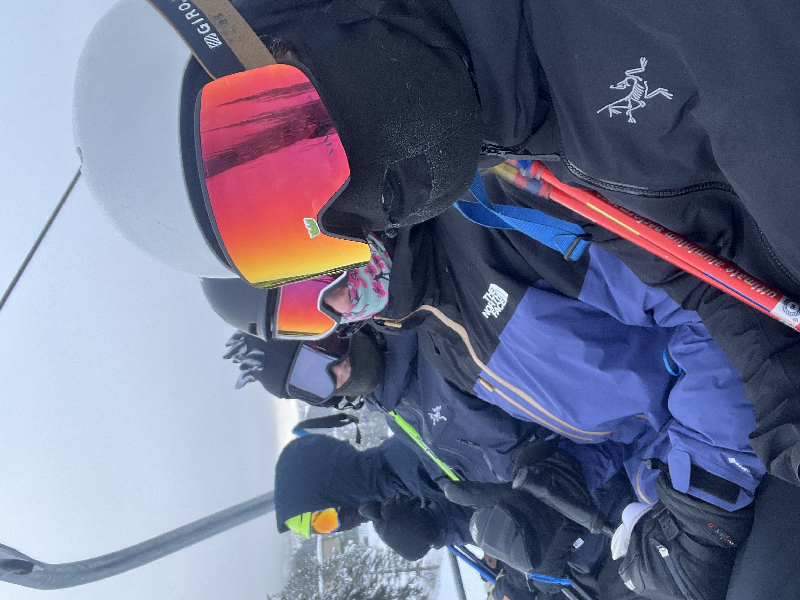
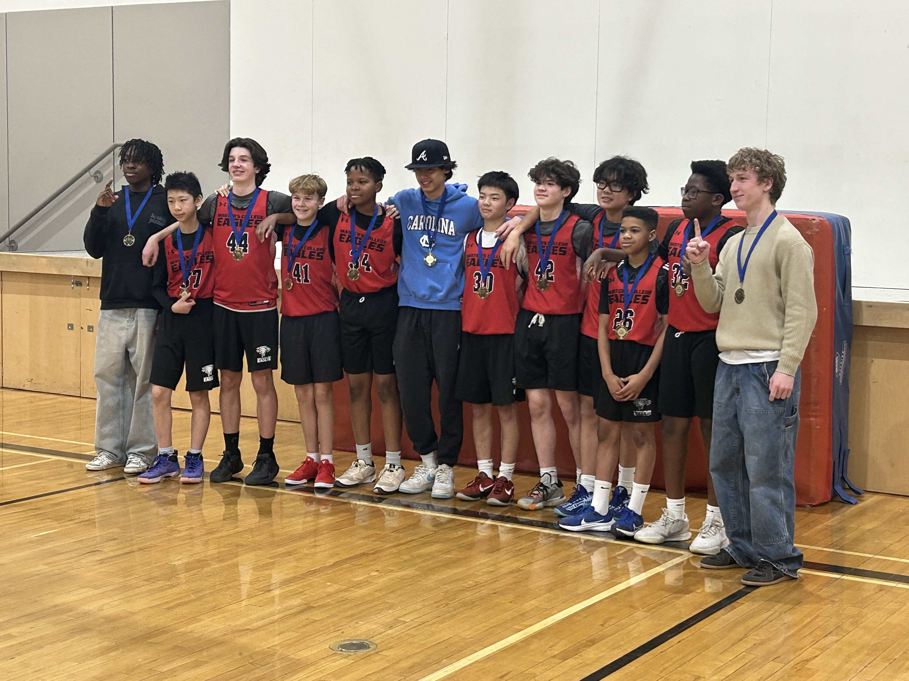

Lachlan Biersteker
UBC Engineering Physics Student passionate about creating innovative solutions from engineering theory and mathematics to solve and analyze challenging real world problems.
.jpeg)
About Me
I am a second year Engineering Physics student at the University of British Columbia. I am passionate about projects involving embedded systems, machine learning, programming. I am also interested in fields of quantum computing and genetic engineering.
I am always eager to gain more skills and experience. I really enjoy working on things that have connections to physics theory and am always looking for ways to apply course material.
Projects
A selection of things I've built.
Smart Gym Sensor
A wearable IMU-based device that gives lifters real-time feedback on exercise form, tracking rep tempo, range of motion, and bar path consistency during a set.


Self-Stabilizing Plane: IMU + Barometer Fusion on STM32
Register-level STM32 firmware fusing an IMU and barometer into a real-time attitude and altitude estimate, closing the loop with dual PID controllers to drive aileron servos toward self-stabilizing, wings-level flight.


Airplane Telemetry Board
A custom PCB for an RC model airplane that streams live GPS, altitude, airspeed, and attitude data to a ground station during test flights.


Experience
WinSport
Calgary, ABSki Instructor
CSIA-certified instructor teaching skiing to students ages 3–18+, enforcing safety protocols and adapting lessons on the fly to conditions and skill level. Built patience, clear communication, and the ability to break a complex physical skill into simple, teachable steps, skills that carry directly into explaining technical work clearly.

Pedalheads
Calgary, ABBike Instructor
Taught children ages 5–12 to ride and navigate roadways safely, adapting each lesson to the individual kid's confidence and ability. Reinforced how to stay calm and safety-minded while managing several fast-changing situations at once, a mindset that transfers well to hands-on lab and hardware work.
Masters Academy
Calgary, ABBasketball Coach, Grade 8 Team
Ran practices and coached games for a middle-school team, developing players' individual skills alongside team strategy. Sharpened my ability to plan structured sessions, give direct feedback, and lead a group toward a shared goal, the same leadership and organization needed to run a project team.

Education
University of British Columbia
Major in Engineering Physics
Achievements
- Dean's List, 2026
- Excellence in Mathematics 30 Award, 2025
Selected Relevant Courses
- Programming in C/C++ (APSC 160)
- Electromagnetism (PHYS 158)
- Calculus 1 & 2 (MATH 100/101)
- Linear Algebra (MATH 152)